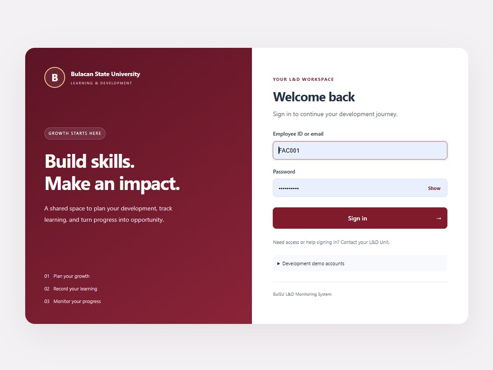
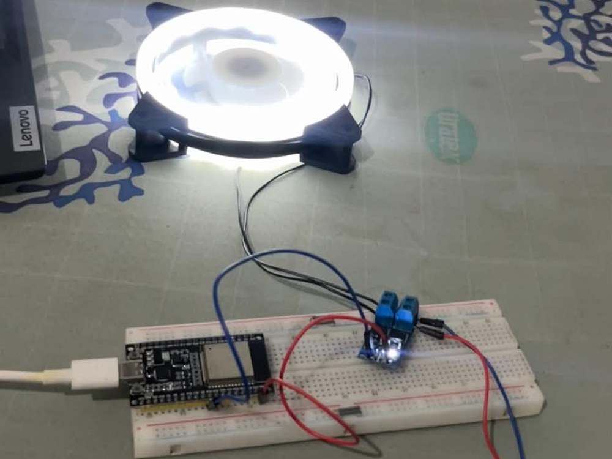

Dwyane Zhan S. Abacan
Web Developer Intern
Computer Technology student who builds and deploys working web systems, from HR platforms to embedded hardware dashboards.
500 training hours to renderAvailable starting 2nd Semester A.Y. 2026–2027
0250500 hrs
About me
I’m a fourth-year Computer Technology student at the College of Industrial Technology who learns by shipping. My capstone is a live, full-stack HR monitoring system, and I’ve also programmed ESP32 hardware for a midterm project. I document what I build, finish what I start, and I’m ready to contribute to a partner company’s web team from day one.
- Rapid AI-assisted prototyping, with manual review and refactoring of generated code
- Responsive debugging across desktop, tablet, and mobile
- Technical documentation, from system specifications to test reports
- Version control and deployment with Git, GitHub, and free static hosting
- Degree
- Bachelor of Industrial Technology
- Major
- Computer Technology
- Institution
- Bulacan State University – College of Industrial Technology
- Expected graduation
- 2027
Technical skills
Tools and platforms
Back-end and data
Design and digital media
Industrial and technical foundations
Featured projects

Data-Driven Learning and Development Monitoring System
Role: Full-Stack Developer (Capstone)
An HR web application that tracks employee training against competency needs. It includes a credential parser using OCR and NLP, competency gap analysis, and training recommendations based on the BulSU Learning and Development Manual.

Remote Fan Speed Controller
Role: Hardware and Firmware Developer (Embedded Systems II)
An ESP32-based controller that sets the speed of a 12V fan using PWM through a MOSFET driver module. It reads input through the ADC and uses a hardware timer with interrupts instead of delay(), and the circuit was designed in Wokwi before the physical build.
Interested in bringing me onto your team for OJT? Let’s connect.
I’m looking for a 500-hour Web Developer Intern placement starting 2nd Semester A.Y. 2026–2027. Send a message and I’ll reply with my CV and availability.
Email me- Emaildwynzxc@gmail.com
- LinkedInlinkedin.com/in/dwyane-zhan-abacan-0a6204447
- GitHubgithub.com/dwyane102
- Preferred setupMetro Manila